Estado del proyecto
Los 7 módulos ya operando dan visibilidad diaria de costo y productividad en campo — de la asistencia al jornal — con datos consistentes para decidir, no solo para reportar.
Con el modelo SQL de STEM, el dato deja de vivir disperso en Excel: una sola fuente de verdad, refresco en minutos —antes 19— y consulta en lenguaje natural sobre toda la operación.
3 frentes de trabajo del proyecto completo — 1 encaminado, 1 en curso, 1 por iniciar.
Fundación de Datos
Hoy
En marcha
De cada predio, el dato pasa por una limpieza estándar (ETL) hacia una sola base gobernada, que alimenta por igual los tableros de Power BI y el Agente Virtual — los números nunca se contradicen entre predios.
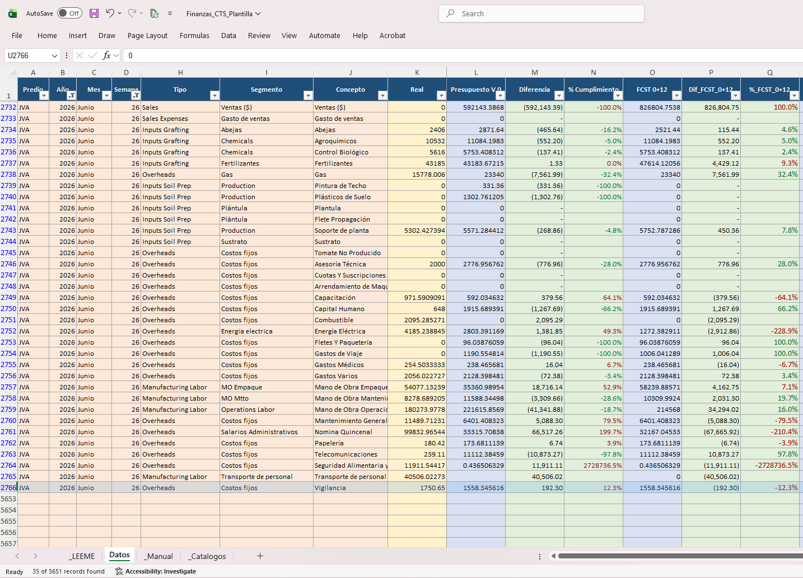
CTS Finanzas
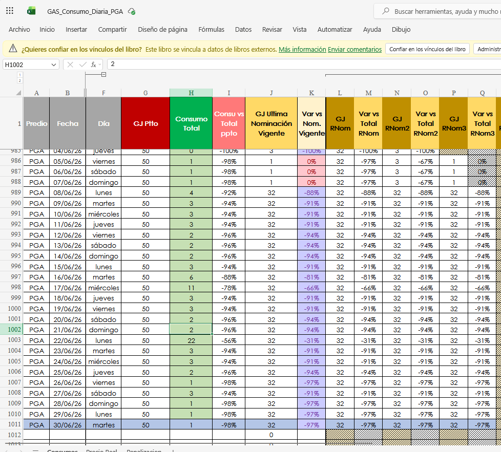
Mapeo de Procesos
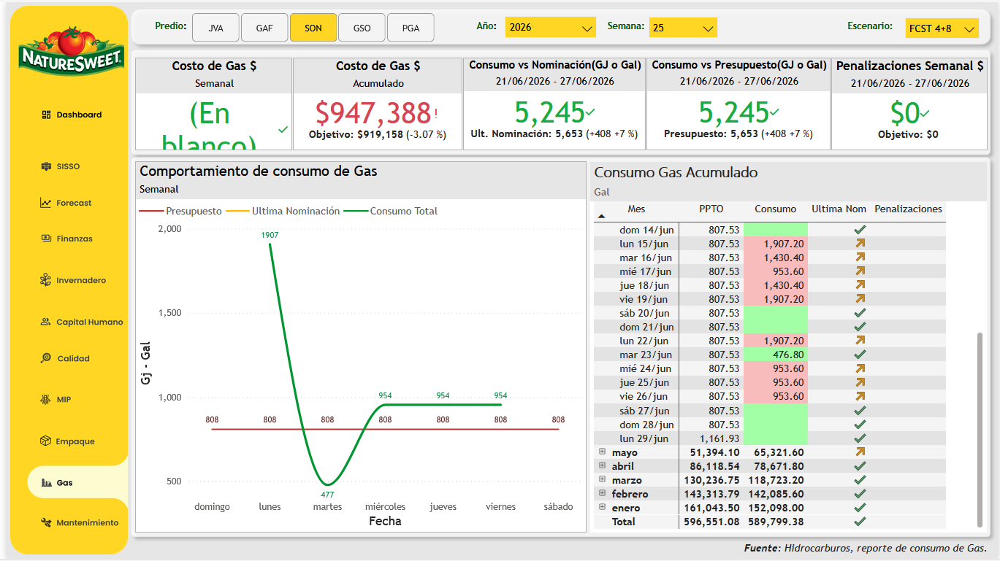
Infografía
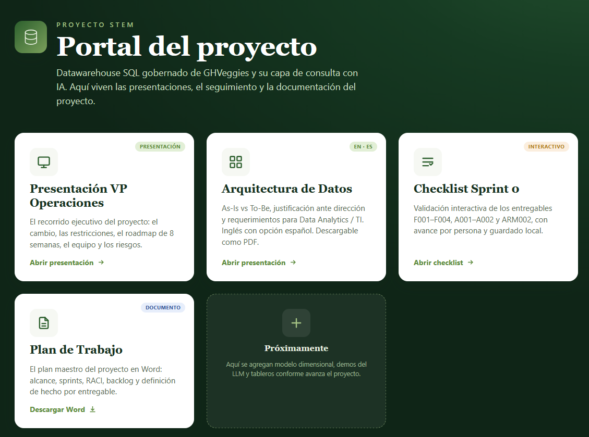
Inventario
Mano de Obra
Un mismo tablero reúne el pulso operativo del campo: eficiencia por invernadero y actividad, asistencia y headcount contra presupuesto, costo de mano de obra por clasificación, cumplimiento de auditoría en campo, productividad y ranking por empleado, jornales reales contra presupuesto, y existencias de almacén contra su stock mínimo — todo por predio, semana y con el mismo dato de origen.
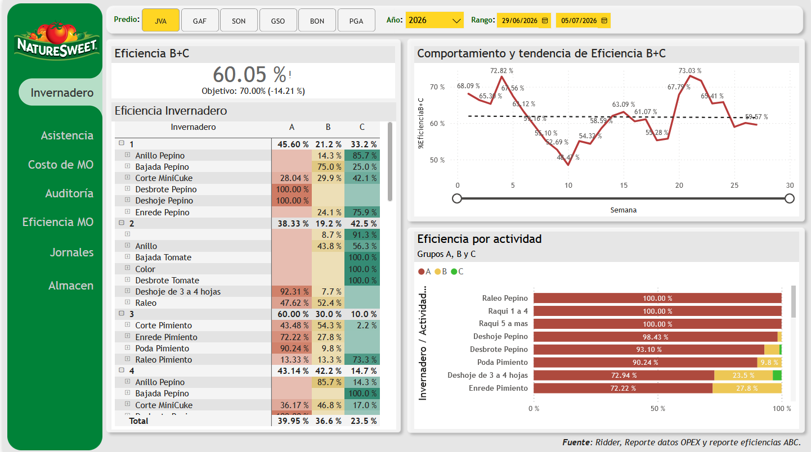
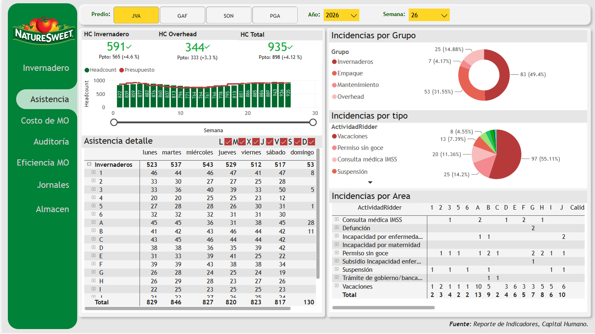
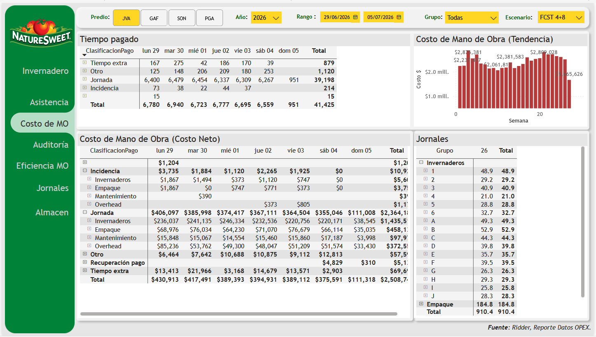
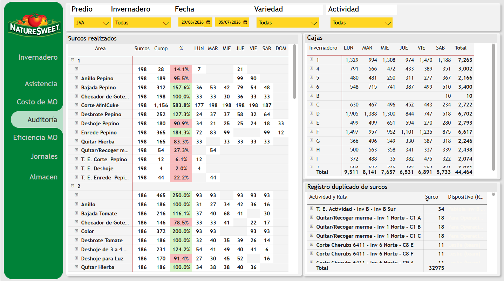
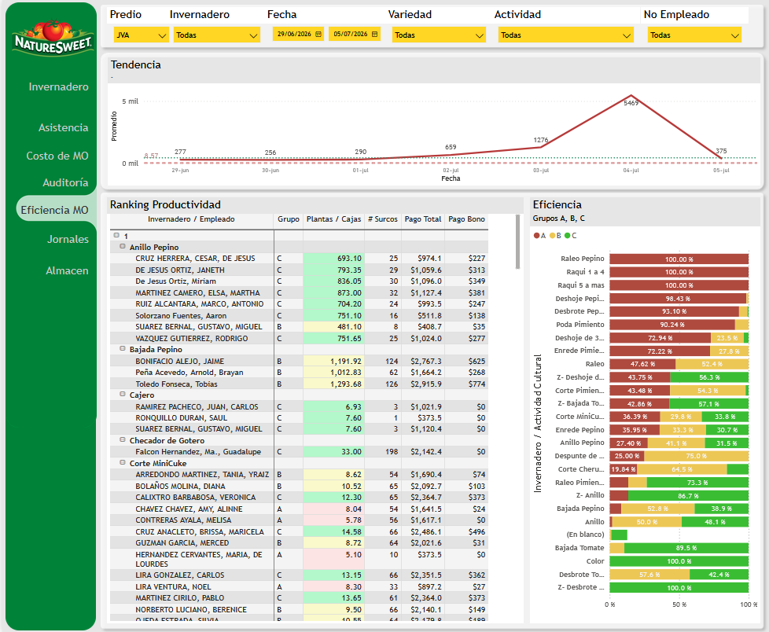
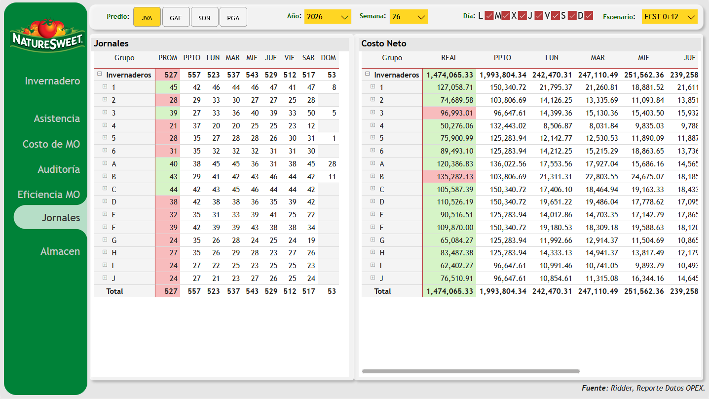
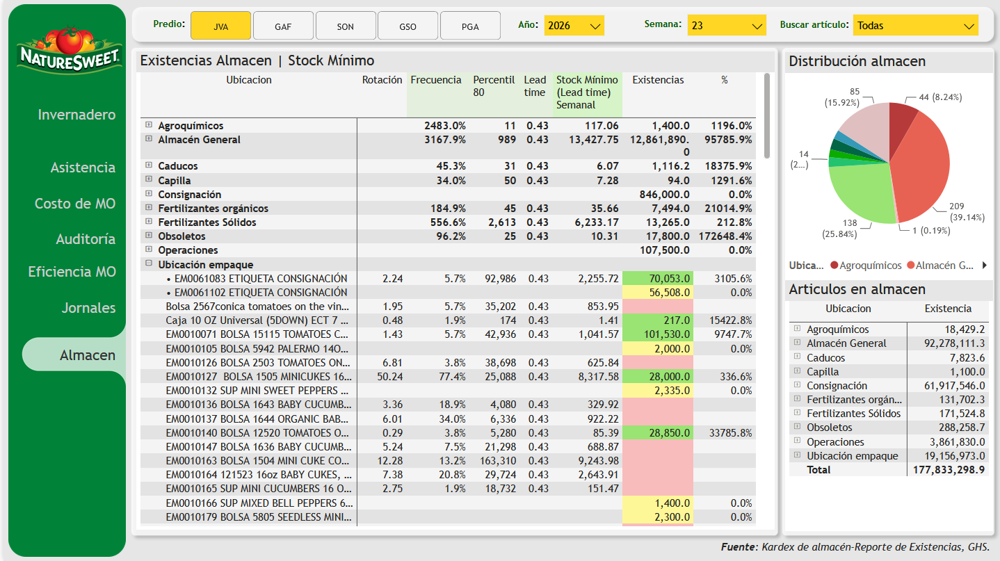
Visión 2.0
Buscamos evolucionar de la navegación compleja en tableros hacia un Agente Virtual OpEx. Una interfaz donde supervisores, coordinadores y gerentes puedan consultar el pulso del invernadero en lenguaje natural, obteniendo respuestas inmediatas sobre eficiencias, RIDDER, reportes de clima, entre otros reportes.
Tú
Ejemplo en vivo — preguntas que el agente ya puede responder
No se trata de reemplazar Power BI, sino de complementarlo. Mientras PBI atiende la visión estratégica, el Agente Virtual atiende el día a día operativo en los pasillos y estaciones de empaque.